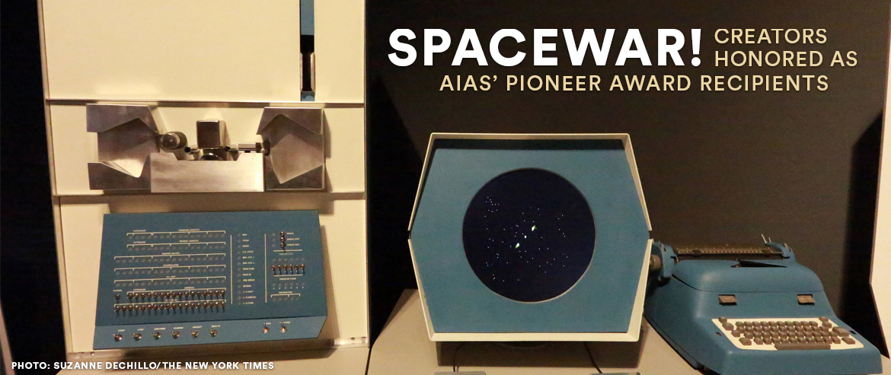
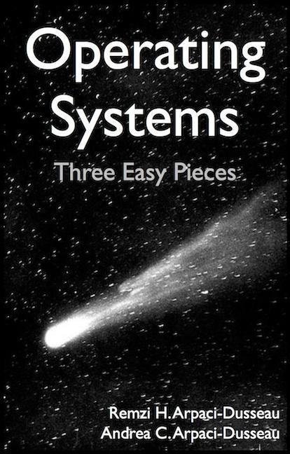

背景
每个学校都要开《操作系统》课……
- 但为什么要学操作系统呢？
- 为什么要学微积分/离散数学/XXXX/……？
长辈/学长：擦干泪不要问为什么
- 学习操作系统的原因
- 你每天都在用的东西，但你却不明白
- 为什么
你正在看直播的浏览器/终端/...能创建一个窗口？ - 为什么 Ctrl-C 有时能退出程序、有时不能？
编程基础不扎实就回头补！任何时候都不迟！
- 为什么
- 你体内 “编程的力量” 尚未完全觉醒
- 编译器、IDE、游戏、游戏外挂、任务管理器、杀毒软件……
- 你每天都在用的东西，但你却不明白
本次课内容与目标
快速过完学习 “操作系统” 之前你应该掌握的知识
- 可以从学期开始、节奏尚未加快的时候快速补充
快速过完 “操作系统” 课程的全部内容
- 给这学期学什么一个宏观的认识
课程概况
最重要的事情最先说
所有课程信息都在课程主页发布 & RTFM。
成绩构成
- 期末考试 40% + 随堂期中测验 10%
- 大实验 25% + 小实验 25%
- soft + hard deadlines
不要对编程抱有任何侥幸心理 - 不付出足够的努力编程必挂
- soft + hard deadlines
特别注意事项
不要求到课 (把时间花在更有效的地方)
- 努力上传视频，但不保证设备不会翻车
准备好 Linux 环境
- x86-64
- 只有 ARM 设备 → 把系统装在优盘上去机房学习
- 可以没有图形界面 (或者说没有图形界面可能更好)
在不违背 academic integrity 的前提下寻求帮助
- 这很难，但坚持下来的人会变得更不一样
上课之前 (八卦部分)
个人简介

努力成为卷王的临时工✖️ (计算机软件研究所✔)
- CCF 优秀博士论文奖
- ACM SIGSOFT Distinguished Paper Award
- MSRA Fellowship Award
Co-Founder of Project-N
- 在 bare-metal 上实现完整计算机系统
JSOI/南京大学 ICPC 集训队教练
- NOI/NOIP 系列赛江苏赛区技术负责人；偶尔出题
- ICPC World Finals 49th Place (2009, team leader)
- ICPC World Finals 13th Place (2019, co-coach)
为什么来教操作系统？
主要问题是...充满热情而且相当聪明的学生...仍然保持他们的兴趣...早就听说过物理学如何有趣、如何引人入胜...相对论、量子力学...
但是，当他们学完两年我们以前的那种课程后，许多人就泄气了...很少有意义重大的、新颖的和现代的观念...学的还是斜面、静电及诸如此类的内容...
——《The Feynman Lectures on Physics》
我学《操作系统》的时候 (2009)
- 不知所云的中文教材
- 没有正经的实验 (写一些 16-bit code)
- 没有合理的 toolchain 和指导，调试全靠蛮力和猜
我竟然活下来了？
我们生活在一个好的时代
- 互联网上应有尽有
- 但大家可能还没有完全准备好适应它
操作系统课给你想要的全部
- 如果悟性比较好，学完这门课你就在系统方向 “
毕业 ” 了- 编写一切 “能写出来” 程序的能力
- 从此以后只有研究论文能满足你的口味了
- 编写一切 “能写出来” 程序的能力
- 如果悟性一般，也会受到充足的训练 (和打击)
三周目反思
课程的逻辑组织获得了成功
- 今年继续改进 (有微调)
Online Judge + 抓抄袭获得了成功
- AI 挂了 1/3 的同学，受到了领导约谈
- 这次没有 AI 的同学了，come on!
上次直播了一个学期……但对着屏幕直播根本就是灾难
- 呃……啊……嗯……这个……
- 有一块黑板就好了
此时此刻你应该掌握的知识
(1) 将需求实现成 (C 语言) 代码的能力
能管理一定规模 (数千到数万行) 的代码。
懂得在程序不正确运行时默念一遍 “机器永远是对的” 然后开始用正确的工具/方法调试。
上学期经过的训练就足够了
- 给出手册，写出一个 x86/RISC-V/MIPS 全系统模拟器
如果你在上课时感到异常吃力
- 编程，编程，编程
(2) 《计算机系统基础》课程知识
具有二进制代码的基本知识。
- 数据/程序的机器级表示
- 程序的编译和链接
- ELF 文件格式
- 程序的执行……
工具使用
- 能阅读理解汇编语言
- 会使用 binutils 中的常用工具
(3) 基本的 Linux 命令行工具使用
会 STFW/RTFM 自己动手解决问题。
不需要多么熟练
- 有基本的概念即可
- 基础命令；管道/重定向的使用……
- shell 是基于文本替换的编程语言
你将在这门课学到的
操作系统：极简概述
Operating System: A body of software, in fact, that is responsible for making it easy to run programs (even allowing you to seemingly run many at the same time), allowing programs to share memory, enabling programs to interact with devices, and other fun stuff like that. (OSTEP)
很多疑点
- “programs” 就完了？那么多复杂的程序呢！
- “shared memory, interact with devices, ...”？
操作系统：极简概述 (cont'd)
本次课程的 three easy pieces
- 问题 1：什么是程序
- 多线程程序的状态机模型
- 问题 2：程序眼中的操作系统应该什么样的？
(设计) - 操作系统是一组 “系统调用” API (和 API 能访问的对象)
- MiniLabs
- 操作系统是一组 “系统调用” API (和 API 能访问的对象)
- 问题 3：怎么才能写出一个操作系统？
(实现) - 操作系统就是个 C 程序 (使用硬件提供的机制)
- 完成初始化后就成为 interrupt/trap/fault handler
- OSLabs
理解操作系统：程序 + API + 计算机硬件
操作系统不是忽然成为现在这个样子的
- 程序、API、计算机硬件
- 计算机硬件发展 → 更复杂的应用和 API
- 更复杂的应用和 API → 计算机硬件发展
1940s 的计算机
跨时代、非凡的天才设计，但很简单 (还不如我们数电实验课做的 CPU 复杂呢)：
- 计算机系统就是一个状态机 (ICS课程的精髓)
- 标准的 Mealy 型数字电路
实现：
- 逻辑门：电子管 (vacuum tubes)
- 存储器：延迟线 (delay lines)
- 输入/输出：打孔纸带/指示灯
1940s 的程序
ENIAC 程序是用物理线路 “hard-wire” 的
- 重编程需要重新接线
最早成功运行的一系列程序：打印平方数、素数表、计算弹道……
- 大家还在和真正的 “bugs” 战斗

1940s 的操作系统
不需要也没有操作系统。
操作系统的目标是 “支持程序的运行”
- 1940s 计算机只支持一个程序独占的运行
- 程序自己就是全部
1950s 的计算机
更快更小的逻辑门 (晶体管)、更大的内存 (磁芯)、丰富的 I/O 设备
- I/O 设备的速度已经严重低于处理器的速度，中断机制出现 (1953)

1950s 的程序
可以执行更复杂的任务，包括通用的计算任务
- 希望使用计算机的人越来越多
- 程序和程序之间开始需要协作
- 程序并不希望直接用指令访问 I/O 设备，而是希望能方便地管理 “文件”
Fortran 诞生 (1957)
1950s 的操作系统
管理多个程序依次排队运行的库函数和调度器。
1950s 出现了
- 计算机非常贵 (50,000-1,000,000\$)，集中管理、排队使用
- 操作 (operate) 任务 (jobs) 的系统 (system)
- “批处理系统”
- 程序的无缝自动切换
- 包含程序之间共享一些代码 (例如读写文件)
- “批处理系统”
Disk Operating Systems (DOS)
- 操作系统中开始出现 “设备”、“文件”、“任务” 等对象和 API
1960s 的计算机
集成电路、总线出现
- 更快的处理器
- 更快、更大的内存；虚拟存储出现
- 更丰富的 I/O 设备；完善的中断/异常机制

1960s 的程序
更多的高级语言和编译器出现
- COBOL (1960)
- APL (1962)
- BASIC (1965)
计算机科学家们已经在今天难以想象的计算力下开发惊奇的程序

1960s 的操作系统
能载入多个程序到内存且灵活调度它们的管理程序，包括给程序提供编程接口。
因为计算资源的增加，有了
- 操作系统需要决定将哪些程序装入内存
- 在多个地址空间隔离的程序之间
切换 - 隔离使一个程序出 bug 不会 crash 整个系统
操作系统中增加了 “进程” 对象和进程管理 API
1960s 的操作系统 (cont'd)
既然操作系统已经可以在程序之间
切换 ，为什么不让它们定时切换 呢？
基于中断 (例如时钟) 机制
- 时钟中断：使程序在执行时，异步地插入函数调用
- 由操作系统 (调度策略) 决定是否要切换到另一个程序执行
- Multics (MIT, 1965)
- 现代操作系统诞生
1970s+ 的计算机
集成电路空前发展，个人电脑兴起，“计算机” 已与今日无大异
- CISC 指令集；中断、I/O、异常、MMU、网络
- 个人计算机 (PC 机)、超级计算机……

1970s+ 的程序
PASCAL (1970), C (1972), …
- 今天能办到的，那个时代已经都能办到了——上天入地、图像声音视频、人工智能……
- 计算机不再是专业人士的专属，个人开发者 (Geek Network) 走上舞台

1970s+ 的操作系统
分时系统走向成熟，UNIX 诞生并走向完善，奠定了现代操作系统的形态。
- 1973: 信号 API、管道 (对象)、grep (应用程序)
- 1983: BSD socket (对象)
- 1984: procfs (对象)……
- UNIX 衍生出的大家族
- 1BSD (1977), GNU (1983), MacOS (1984), AIX (1986), Minix (1987), Windows (1985), Linux 0.01 (1991), Windows NT (1993), Debian (1996), Windows XP (2002), Ubuntu (2004), iOS (2007), Android (2008), Windows 10 (2015), ……
今天的操作系统
通过 “虚拟化” 硬件资源为程序运行提供服务的软件。
空前复杂的系统之一
- 更多的处理器、更大的内存
- 更多的硬件机制 Intel-VT/AMD-V, TrustZone/SGX, ...
- 更多的设备
- 网卡、SSD、GPU、FPGA...
- 复杂的应用需求和应用环境 (IoT、手机、PC、服务器……)
在这门课中，我们会讲解其中最重要的三个头绪
- 程序、API (设计)、计算机硬件 (实现)
更多的课程信息
教材：Operating Systems: Three Easy Pieces (OSTEP；黑书)

OSTEP：目前世界上最好的操作系统教材之一
- 选好教材，就成功了一大半
- Open Access (免费)
- 作者 (Remzi and Andrea) 是计算机系统界的 “神雕侠侣”
- 上海交大 MOSPI 教材/视频也不错
- 讲述方式和我们不太一样
- 我是 SE/PL 人的阐述角度
Class Meetings：原理课
顺序调整后的 operating systems: three easy pieces
- 并发 (concurrency)
- 多处理器/共享内存线程
- 同步、互斥、并发 bugs
- 虚拟化 (virtualization)
- 进程和虚拟存储
- 持久化 (persistence)
- 文件系统
Class Meetings：代码课
操作系统设计 (应用视角/设计)
- demo 小程序
- 各类系统工具的实现 (strace, gdb, ...)
操作系统实现 (硬件视角/实现)
- xv6
- 2006 年 Russ Cox, Frans Kaashoek, Robert Morris 在 MIT 重写的 UNIX 系统
- 最新的 RISC-V 版本 (别怕，别怕)
- AbstractMachine
- 2017 年为 Project-N 设计的抽象层
- 在《计算机系统基础》中已经使用过
编程实验
无所谓听不听课看不看书，独立完成编程作业即可理解操作系统。
应用视角 (设计)：Mini Labs x 6
- 使用 OS API 实现 “黑科技” 代码
硬件视角 (实现)：OS Labs x 5
- 自己动手实现一个真正的操作系统 (AbstractMachine)
Online Judge
 本学期采用在线评测
本学期采用在线评测
- Mini Labs 100% 客观评分
- OS Labs 大部分客观评分
严格要求大家
- 代码不规范 →
-Wall -Werror编译出错- 例子：unused variable
- 代码不可移植 → 编译/运行时出错
- 例子：
int x = (int)&y;
- 例子：
- 硬编码路径/文件名 → 运行时出错
- 例子：
fopen("/home/jyy/a.txt", "r")
- 例子：
- 糊弄 → 测试失败
总结
总结
本次课内容与目标
- 快速过完学习 “操作系统” 之前你应该掌握的知识
- 快速过完 “操作系统” 课程的全部内容
Take-away message
- 操作系统没有传说中那么复杂
- 三个关键：程序、API、计算机硬件
- 从简单到复杂去理解
- 三个关键：程序、API、计算机硬件
这门课没有传说中那么可怕